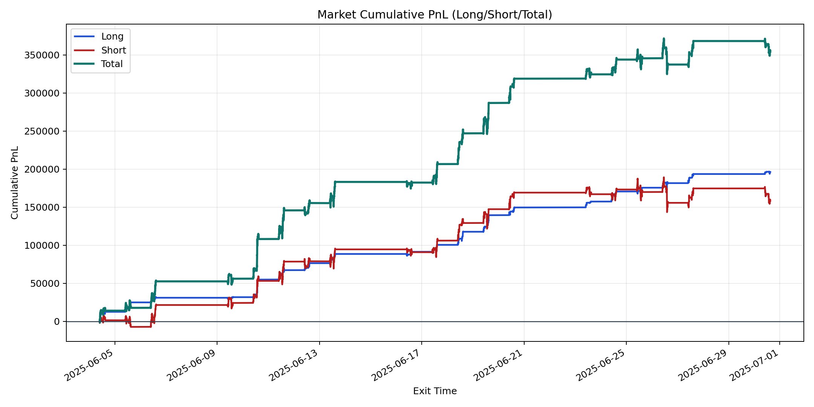
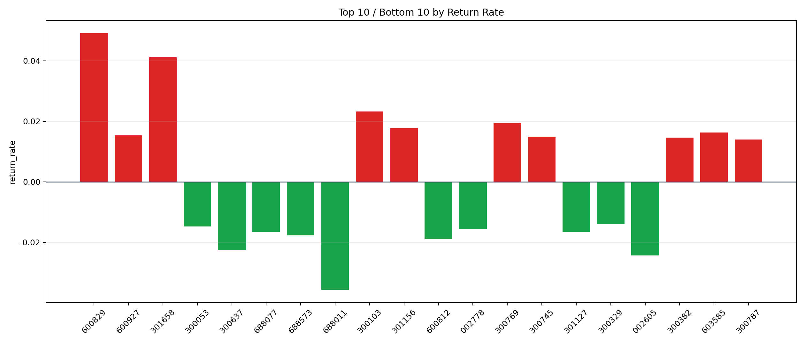

| repo_root | /home/haoranyou/data/output/alpha0.4_1w_5s_3ticks |
|---|---|
| period_months | 1 |
| period_label | 2025-06-04_to_2025-06-30 |
| start_time | 2025-06-04 09:50:17 |
| end_time | 2025-06-30 15:00:00 |
| n_trades | 68489 |
| n_symbols | 1236 |
| total_pnl | 354387.8671999998 |
| long_total_pnl | 196258.39254999984 |
| short_total_pnl | 158129.47464999996 |
| total_entry_notional | 642552502.0 |
| long_entry_notional | 111336280.0 |
| short_entry_notional | 531216222.0 |
| total_return_rate | 0.0005515313785207233 |
| long_return_rate | 0.001762753278176708 |
| short_return_rate | 0.000297674408463377 |
| top_symbols_by_return | ["600829", "301658", "300103", "300769", "301156", "603585", "600927", "300745", "300382", "300787"] |
| bottom_symbols_by_return | ["688011", "002605", "300637", "600812", "688573", "688077", "301127", "002778", "300053", "300329"] |

